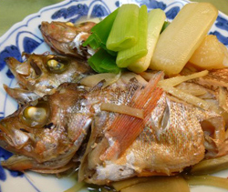

メバルの煮付け
- 調理時間：30 分
- （一人当たり）
- カロリー：217kcal
- たんぱく質：62.8g
- 脂質：11.3g
- 塩分：2.2g

- メバル
- ３匹
- 大根
- ７～８ｃｍ位
- 長ネギ
- １本
- 生姜
- １００g
- 水
- １５０ｃｃ
- 料理酒
- ３００ｃｃ
- みりん
- ５０ｃｃ
- 砂糖
- 大さじ１
- 醤油
- 大さじ２
- 塩
- 少々

- メバルの鱗、内臓を取り除いた後、８０℃位のお湯をかけて霜降りをする。
- 大根は食べやすい大きさに切る。
ネギは５ｃｍ長さのブツ切りに、生姜は薄切りにする。 - 鍋に水、料理酒、みりん、砂糖、生姜を入れて煮立てる。
- メバル、大根、ネギを入れ、落し蓋をして煮る。
全体に火が通る少し前に、醤油と塩を加え、さらに煮る。 - 落し蓋を取り、少し煮詰めて完成。煮汁と共に盛り付ける。
メバルの煮付け
新鮮な魚はお刺身や塩焼きがよいのですが、メバルや金目鯛などは煮付けが抜群においしい。甘辛い味付けはご飯がすすみますし、酒の肴としても相性がよく魚好きにはたまらない一品といえるでしょう。こんなにおいしい魚ですが、魚離れが問題視されており、「うちの子は魚が苦手」という保護者の声を耳にします。子供たちは初めての味や体験を避ける傾向があります。しかし、味の記憶に楽しい記憶がつながると、次第にその食材が好きになってくるようです。魚の煮付けは難しいと敬遠されがちですが、食卓に魚を取り戻し、魚離れを食い止めましょう。